课程原文离线快照。图片、表格、附件与视频保存到本地；平台测验判分、按钮交互和学习进度请使用在线课程。
AI 和 Agent 基础
先建立一张完整的概念地图，再沿着“大语言模型如何变得会做事”的路径走到 Agent，最后理解企业为什么需要 ADP 这样的开发与运营平台。
1.1AI 基础
认识 AI，第一步不是记住那些名词、学习相关操作，而是先理清AI相关名词的关系：人工智能、机器学习、深度学习、生成式 AI 到底是什么、有什么关系，AI 又是沿着怎样的时间线，一步步走到如今能够进行“创造”的。
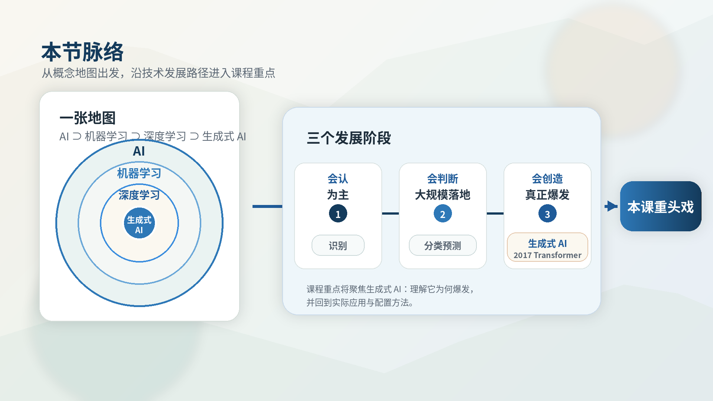
在讲任何技术细节之前，我们要先在脑子里画一张“地图”。因为绝大多数人对 AI 的困惑，不是某个技术太难，而是名词太多、关系太乱——今天听到“机器学习”，明天听到“深度学习”，后天又冒出来一个“生成式 AI”“大模型”，它们到底谁是什么、有什么关系，完全搞不清楚。
所以本节只做两件事：第一，用一张图讲清这些名词的关系；第二，用“三个发展阶段”这条时间线，告诉我们 AI 是怎么从“会认字”一路进化到“会创作”的。
1.1.1 AI 是什么
一张图解释人工智能、机器学习、深度学习、生成式 AI 的关系
想象四个从大到小、层层嵌套的圈：
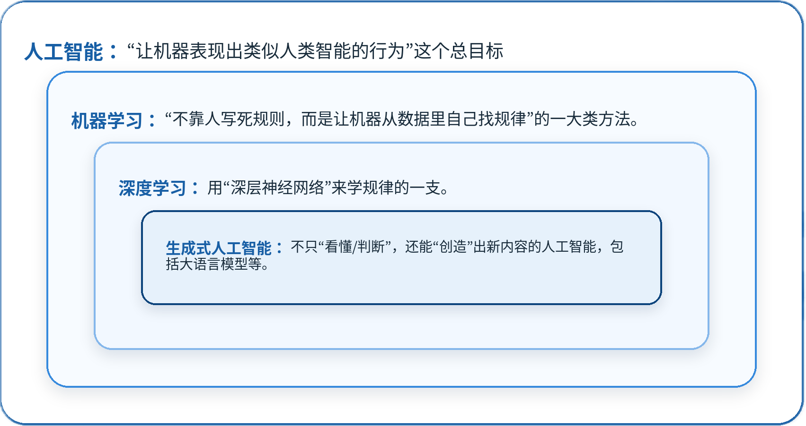
读懂这张图：
人工智能（AI） ——一个愿望
人工智能是最大的圈，它更像是一个“愿望”，或者说一个“目标”：让机器能像人一样思考、判断、做事。我们可以认为，凡是朝这个目标努力的技术，都算 AI。这个概念并不新，早在 1956 年，一群科学家就在一次会议上正式提出了“人工智能”这个词，到今天已经七十年了。也就是说，人类“想让机器变聪明”的这个梦想，很早就开始做了，几十年来，人们一直在探索更多方法来实现这个梦想。
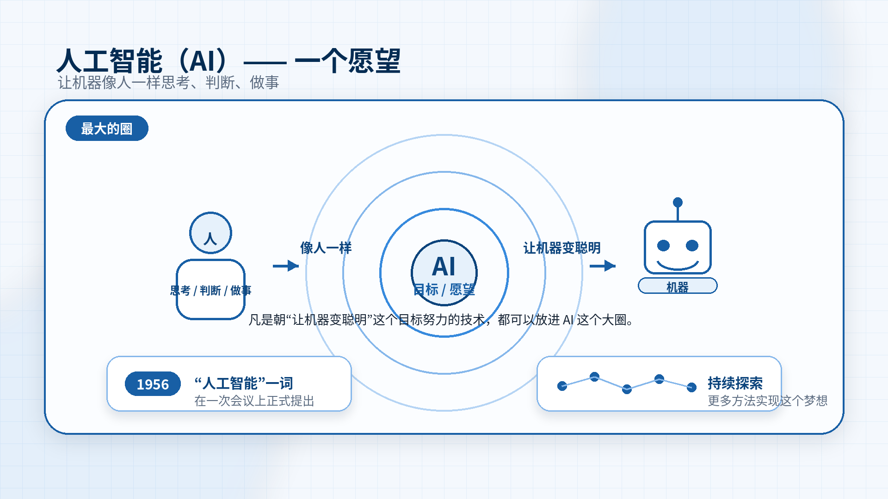
机器学习 ——实现这个愿望最主流的一条路
要让机器变聪明，历史上有过两种截然不同的思路。早期的思路是“人把规则写死”，即工程师把一条条规则提前编好告诉机器，比如“体温超过 38.5 度就建议就医”，机器只会照着这些规则执行，遇到没写到的情况就束手无策，这类技术叫“符号 AI”。而机器学习走的是另一条路，不再靠人一条条写规则，而是喂给机器大量的数据，让它自己从数据里去总结规律。打个比方，教小孩认猫，不是给他背一本"猫的定义手册"，而是给他看成百上千张猫的照片，看多了他自己就会认了。机器学习就是这个思路，也正是今天 AI 最主流的实现方式。这里要提醒一句：即使是很早期的、靠人写符号规则的“符号 AI”，也属于人工智能这个大圈，只是不属于机器学习这一支。
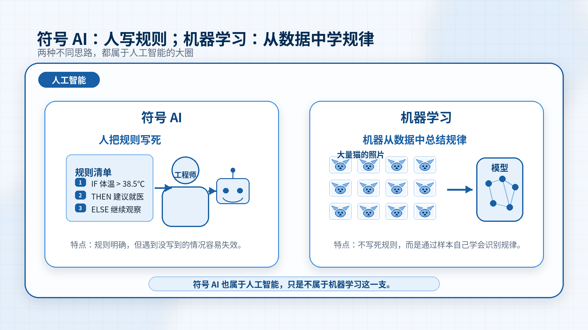
深度学习 ——机器学习里“最能打”的一支
今天我们听到的几乎所有厉害的 AI，底层都是深度学习。机器学习本身也有很多种方法，其中最能打、这十几年最出风头的一支，就是深度学习。它的名字听起来玄乎，其实拆开看很好懂：“学习”，说明它仍然是机器学习那一套——喂数据、自己总结规律；“深度”，指的是它用了一种叫"神经网络"的结构，而且这个结构层数堆得很多、很"深"，层数越深，它能理解的东西就越复杂、越抽象。所以叫深度学习。也正因为这个能力，今天我们听到的几乎所有厉害的 AI——人脸识别、语音输入、机器翻译、自动驾驶的视觉——底层用的基本都是深度学习。
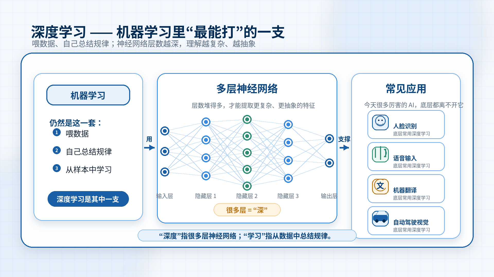
生成式 AI ——深度学习里最新、最耀眼的一小块
生成式 AI，顾名思义，就是"能生成新内容"的 AI。其实，“会创造”并不是生成式 AI 才有的能力。 在它之前，AI 就已经有一些“创造”的尝试了——比如早期能生成文字的模型、能生成逼真人脸图像的技术，都属于生成式 AI 的早期探索。只是那时候的创造能力比较有限，写几句还行，写长文就语无伦次；生成的东西质量也不够稳定，更谈不上人人可用。
真正让生成式 AI 脱胎换骨的，是 2017 年之后的一系列突破（我们下一节讲的 Transformer 就是关键）。从那以后，生成式 AI 做到了又通用、又强大、又人人可用。我们不需要懂技术，打开 ChatGPT、元宝、DeepSeek，随便说句话它就能帮你写、帮你画。所以我们说，生成式 AI 是深度学习里最新、也最耀眼的一小块。
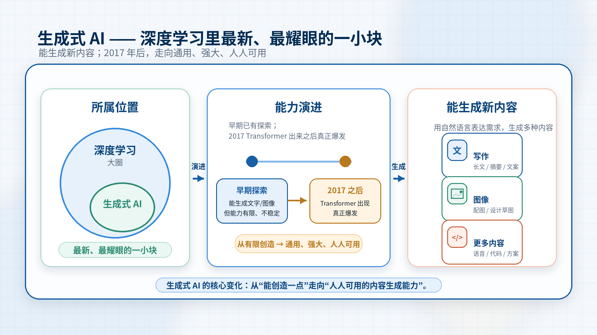
1.1.2 AI的发展阶段
理解了空间上的包含关系，我们再来看时间上的发展阶段。AI 从诞生到今天，大致可以分成三个阶段，以“会认”为主的 AI → “会判断”的 AI 大规模落地 → “会创造”的 AI 真正爆发。
AI 最早期能做的事情，说起来很朴素：识别，也就是让机器“看懂”一个东西是什么。
时间回到 1956 年，一群科学家在美国达特茅斯学院开了一次会，正式提出了“人工智能”这个词，这一年被公认为 AI 的元年。不过在最初的几十年里，AI 走得并不顺。早期人们主要靠“人来写规则”的思路，把知识一条条编成规则灌给机器，也就是所谓的“专家系统”。这类系统在特定领域（比如医疗诊断、化学分析）能派上用场，但毛病很明显：规则全靠人一条条手写，一旦遇到没写到的情况就束手无策，做起来又费力又不灵活。AI 甚至经历过两次“寒冬”，人们对AI的热情退去、投入锐减。
真正让“会认”这件事落地的，是后来“让机器自己从数据里学”的思路。一个标志性的成果，是上世纪八九十年代的手写数字识别。以 Yann LeCun 等人的工作为代表，AI 第一次能比较可靠地认出人手写的数字，并被真正用到了实处——比如银行自动识别支票上的手写金额、邮局自动分拣信封上的邮政编码。这在当时是了不起的进步，因为它证明了，机器不必靠人写死规则，也能从大量例子里自己总结出规律。
这个阶段的 AI，可以用一句话概括它的本事：“给它一个东西，它告诉我们这是什么。”是猫还是狗、是数字几——它擅长“认”，但也仅此而已，它不会思考，更不会创造。尽管本事朴素，这一阶段却是后面一切的根基，机器证明了它能从数据里学到规律。
会“认”之后，AI 的下一步是学会“判断和预测”——不只是识别眼前这个东西是什么，还能基于数据做出决策、给出预测。
这一阶段之所以能起来，背后有两个现实推手：一是互联网普及，企业手里第一次攒下了海量数据；二是计算机算力不断变强，数据多了、算力够了，“让机器从数据里学规律”这条路才真正跑得通。于是，机器学习的各种经典算法开始大放异彩——比如决策树、支持向量机、随机森林等等。它们不像早期专家系统那样靠人写死规则，而是自己从大量历史数据里总结出判断的依据。
也正是在这个阶段，AI 第一次大规模从实验室走进了真实产业，而且都是能直接产生商业价值的场景。例如：
- 垃圾邮件过滤：给它一封邮件，它判断这是不是垃圾邮件。
- 商品推荐：根据我们过去买过、看过什么，预测我们可能还想买什么。亚马逊、淘宝等电商的推荐系统，正是从这个时期发展起来的。
- 除此之外，还有银行的信用评分与风控反欺诈、广告的点击率预测、搜索引擎的结果排序等，背后都是这一套判断与预测的能力。
它的本事，可以概括成一句话：给它一堆情况，它帮我们做判断、下预测。这一阶段的 AI 已经相当实用，甚至可以说，我们今天生活里习以为常的很多智能功能，都是在这时打下的底子。
但我们也会发现，这时候的AI自己主动创造新东西的能力不太行。要突破这个天花板，就要进入真正改变格局的第三阶段。
大约在 2017 年，一篇名为《Attention is All You Need》的文章提出了深度学习的一个全新架构——Transformer。在它之前，处理文字（序列）主要用 RNN/LSTM，有个大毛病：得一个字一个字顺着读，读长句子时前面容易忘，而且没法并行、训练慢。Transformer 关键的贡献，是引入了一种叫“注意力机制”的设计，让模型既能一眼看全整句话、抓住词与词之间的关联，又能大规模并行计算。这样，模型可以判断哪个词和哪个词最相关，长距离依赖不再健忘；也可以喂进海量数据、把模型堆得特别大。正是这两点，为“把模型做得又大又强”扫清了障碍。
紧接着在 2018～2019 年前后，基于 Transformer 的一批模型横空出世：谷歌推出了 BERT，OpenAI 推出了 GPT 系列。研究者发现了一个规律——只要把模型堆得更大、喂进更多数据，它的能力就会持续变强。于是模型越做越大，从 GPT-2 到 GPT-3，参数量呈指数级增长，生成式 AI 开始起飞。到了 2022 年底，OpenAI 发布 ChatGPT，第一次让普通人也能上手，短短两个月用户破亿，AI 就此彻底出圈，走进了大众视野。
“会创造”并非这时才出现，但正是从这一阶段起，它才第一次做到又通用、又强大、又人人可用：
我们说一句话，它能写出一整篇文章（ChatGPT、豆包、元宝、DeepSeek……）；
我们描述一个画面，它能画出一张图（Midjourney……）；
我们给一段文字，它能生成一段视频（Sora……）、一首歌（Suno……）。
这些，都属于生成式AI。短短几年间，AI 从一个只会“认”和“判断”的工具，变成了人人都能用的能写、能画、能作曲、能编程的“创造者”，几乎渗透进内容、编程、设计等各行各业。其中，大语言模型是生成式 AI 的一种，而且是最主流、最核心的一种。
1.1.3 小结
本小节中，AI 相关的名词虽多，核心是一张地图加一条时间线。人工智能、机器学习、深度学习、生成式 AI 层层包含；AI 从“会认”为主，到“会判断”大规模落地，到“会创造”的真正爆发，再到后面即将讲到的Agent，AI正变得越来越强大。
下一节 1.2「大语言模型的进化之路：从“会接龙”到“会做事”」会把“会创造”大规模爆发的这个阶段展开，看大语言模型如何通过Prompt、记忆、RAG、工具、MCP 补齐短板，长成能做事的AI。
1.2大语言模型的进化之路：从“会接龙”到“会做事”
大语言模型是生成式 AI 的一种，而且是最主流、最核心的一种。大语言模型本质上只会做文字接龙，但依靠 Prompt、记忆、RAG、工具、MCP 逐步补齐短板，它逐渐从只会做文字接龙的AI成长为能做事的AI。
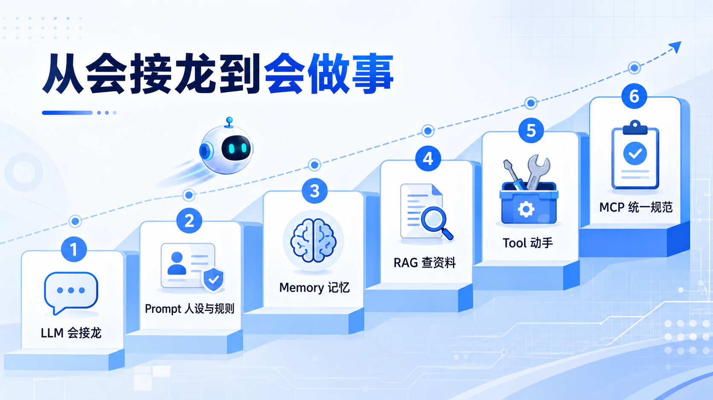
1.2.1 Transformer：大语言模型的起点
说到大语言模型，首先就得提一提Transformer。上一节我们提到，Transformer是一个深度学习的架构，不是一个具体的产品。Transformer引入了一种叫“注意力机制”的设计，让模型既能一眼看全整句话、抓住词与词之间的关联，又能大规模并行计算，为“把模型做得又大又强”扫清了障碍。我们可以把“架构”理解成一张建筑图纸。图纸本身不能住人，但按照这张图纸，我们可以盖出千千万万栋不同的楼。Transformer 就是这样一张革命性的“图纸”，2017 年被提出后，此后几乎所有厉害的生成式 AI 模型，都是照着这张图纸盖出来的。GPT、BERT、混元、DeepSeek……这些名字听起来五花八门，但它们本质上都是基于 Transformer 这张“图纸”盖出来的不同的“楼”。照着 Transformer 这张图纸，盖出来的第一批、也是最重要的一类"楼"，就是大语言模型。
1.2.2 大语言模型如何从“会接龙”走向“会做事”
1.2.2 大语言模型（LLM）：本质就是“文字接龙”
大语言模型（LLM）的本质，其实并不神秘：它就是一个能力极强的“文字接龙机器”。给它一段文字，它便预测下一个字（更准确地说是下一个“token”，可以简单理解为一个字或词）最可能是什么，然后接上去；接完之后，再把新的这段文字重新读一遍，继续预测下一个，如此循环往复，直到生成一整段话。
例如：当模型看到“地球绕着什么转？”时，它先接出一个“太”字；再看着“地球绕着什么转？太”，接出“阳”字；如此一个字一个字地续下去，最终输出完整的回答。可以说，模型每走一步，做的都是同一件事——在无数可能的字里，挑出最合理的下一个，本质上是在不停地做“选择题”。我们平时用的 ChatGPT、Claude、DeepSeek、元宝，底层做的都是这件事。
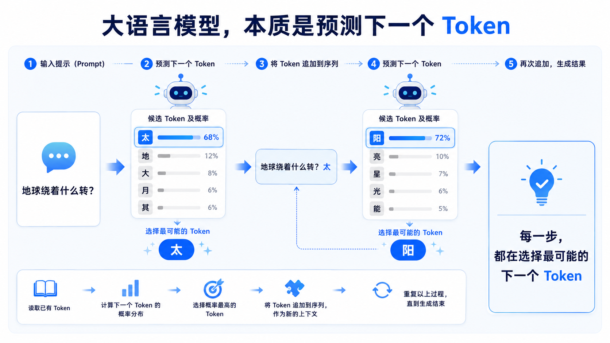
作为一个“文字接龙机器”，它天生有两个毛病。
首先，它可能会一本正经地胡说八道，也就是所谓的AI 幻觉。由于它只负责接出“读起来最通顺、最合理”的内容，并不真正核实事实对错，因此当它遇到不确定的问题时，往往不会承认“我不知道”，而是会顺着语感编出一个看似有理有据、实则并不存在的答案。有时候即便给模型接上了外部工具或资料，它也未必有足够的判断力，比如工具返回“上海气温一万度”这种明显离谱的数字，模型有时会照单全收地讲出来，有时才会察觉不对。这说明，它的“通顺”并不等于“正确”。
其次，它对“当下”一无所知。它不清楚自己是谁、现在几点、外面天气如何，因为这些信息根本不在它接龙时所看到的那段文字里，也不在它训练时学到的旧知识中。此外，它每次能“读进眼里”的文字还有长度上限（即“上下文窗口”），文字一旦太长，即便没有超限，也常常会接得不准。
于是，如何驯化这个既强大又毛躁的工具、让它变得可控可用，就成了关键。而驯化的方法之一，就是提示词（Prompt）。
这里解释一个贯穿全课程的关键概念——token（中文译作“词元”）。前面说模型是在“预测下一个字”，这只是一种通俗的说法；严格来讲，模型每一步预测和生成的基本单位并不是“一个字”，而是“一个 token”。
所谓 token，就是模型处理文字时所切分出的最小单位。它可能是一个汉字，可能是一个英文单词，也可能只是单词的一部分或一个标点。换句话说，模型眼中的文字，并不是一个个字符，而是一串被切好的 token；它所谓的“接龙”，本质上就是在已有的一串 token 后面，不断预测并接上最合理的下一个 token。
token 的意义不止于文字。随着技术发展，token 可以是文字，也可以是图像、表格，甚至是声音、视频的基本单位。正因为把各种复杂的内容都拆解成了有限的基本单位（token），生成式 AI 才能用“从有限的选择里，不断决定下一个”的统一方式，去生成几乎无穷无尽的内容，这也正是它能同时写文章、画图、作曲的底层原理。
此外，token 还是一个非常实际的计量单位：我们平时听到的“模型能处理多长的内容”“调用一次花了多少钱”，通常都不是按字数、而是按 token 数来计算的。理解了 token，后面许多概念（比如上下文长度、调用成本）也就更容易理解了。
1.2.3 提示词（Prompt）：给模型赋予设定
既然模型只会根据我们给的文字往下接，那么一个很自然的想法便产生了：我们能不能在它正式接龙之前，先塞给它一段文字，把它应当知道的设定、背景、规则都预先告诉它？我们完全可以在这段输入里“做文章”，用文字提前为它立好规矩。这正是提示词（Prompt）的核心思想。
- 系统提示词（System Prompt）
它是系统预先为模型设定好的“人设与规则”，用户通常看不到。比如：“你的名字叫元宝，不叫小助手；请始终以礼貌、专业的语气回答，不讨论与业务无关的话题。”把这样一段文字，在用户提问之前就一并喂给模型，它接龙时便“知道”自己是谁、该用什么口吻、什么该说什么不该说。在真实的产品里，系统提示词往往远不止一句人设，还会包含与身份相关的信息、可以使用哪些工具及其用法、行为规范、能调用哪些技能、以及此前的记忆去哪里查找等等。也因此，用户可能明明只问了一个简单问题，模型那一端实际收到的系统提示词却可能超过四千个 token——这些幕后的文字，用户完全看不见，却在默默地塑造着模型的每一次回答。
- 用户提示词（User Prompt）
很好理解，它就是我们每次在对话框里输入的那句话，比如“帮我写一首诗”“把这段话翻译成英文”。它表达的是我们当下的具体需求。
归根结底，提示词是我们能够主动控制、并喂给模型的那段文字。系统提示词负责稳定的“人设与规则”，用户提示词负责当下的“具体任务”，二者叠加在一起送入模型。有了它们，一个原本只会漫无目的瞎接龙的模型，便有了稳定的身份与边界，开始真正像一个可用的助手。
1.2.4 记忆与上下文工程：让 AI 记住我们
如果只有提示词，大模型仍然记不住事。原因回到它的本质：它每一次接龙，能“看到”的只有当前这一次输入的文字，一旦某些信息不在这段文字里，它就无从知晓。
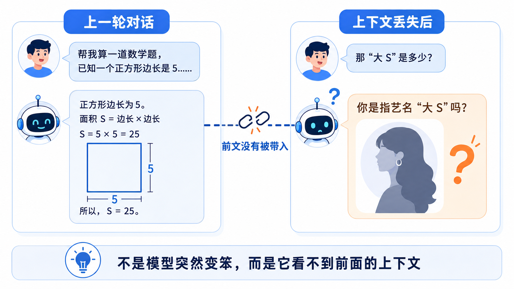
在这个例子中，用户先对 AI 说“帮我算一道数学题，……”，AI 算了一通；接着我们追问“那‘大 S’是多少？”这里的“大 S”，显然指的是公式里的面积 S。可 AI 没有“记住”前面在聊数学，它直接蹦出一个“徐熙媛（艺名大 S）”来。这就是没有记忆、丢失上下文时的尴尬。它并不是变笨了，而是它“眼前”那段文字里，根本没有前面聊过数学的痕迹。
之所以会这样，还牵涉到一个现实限制。语言模型每次能够读入（以及输出）的文字长度是有限的，这个上限叫作“上下文窗口”（Context Window）。不同模型的上限各不相同，今天较好的模型往往能一次处理上百万个 token；但即便如此，输入越长，哪怕还没触及上限，模型也常常会接得不那么准。这意味着，我们不能天真地把所有历史对话一股脑塞给它，而必须有策略地组织到底让它看到哪些内容。
正因如此，人们提出各种解决这个问题的办法，统称上下文工程（Context Engineering）：想办法把应当让模型看到的所有背景信息，都恰当地组织好、再喂给它。前面讲的提示词（Prompt），其实就是上下文工程的一部分；而其中另一个关键部分，就是记忆（Memory）。
- 短期记忆：
指的是本次会话里说过的话，模型能够记住。但它的“短”就体现在，一旦我们换到一个新的对话框，之前的内容便不复存在，模型又会“失忆”般地从头开始。
- 长期记忆：
指的是跨越所有会话、绑定在我们这个账号上的信息，而不只是当前对话框里的内容。比如它记住了“我们从事财务工作、偏好简洁的回答、所在公司叫某某”，那么无论哪天、开哪个新对话，它都能延续这些信息。模型正是借由这种方式，才显得“记得”我们是谁、之前聊过什么。可以看出，所谓长期记忆，本质上仍是把该记住的内容，在恰当的时候重新组织成文字、再喂回给模型。
有了上下文工程，AI 便同时具备了会接龙、有人设、能记事这几项能力。但如果只有这些，就仍然存在一些问题。例如，它所掌握的知识，都是训练时学到的旧知识，而且还可能记错（幻觉）。如果我们想让它准确回答“我们公司最新的报销制度”这类它压根没学过的内容，又该怎么办？这时候，就需要 RAG 登场了。
1.2.5 Embedding 与 RAG：让 AI 先查资料再回答
我们想让 AI 在回答之前，先去我们指定的资料里查一查，找到相关内容，再基于查到的内容来回答，这样它就不那么容易瞎编。这个“先查资料、再回答”的机制，就是大名鼎鼎的 RAG（Retrieval-Augmented Generation，检索增强生成）。
但在讲 RAG 的流程之前，必须先理解一个更重要的底层概念——Embedding（向量化），否则我们会不明白AI 到底是怎么“查”资料的。
计算机不认识文字，只认识数字。Embedding 做的事，就是把一段文字（一个词、一句话、一段话）转换成一串数字（我们叫它“向量”）。 而且这个转换很神奇：意思相近的文字，转换出来的数字串也会很接近。例如在一个二维坐标轴中，横轴表示“是否可食用”，纵轴表示“是否属于动物”。那么“苹果”就在右下角（可食用、不是动物），“梨”离苹果很近（也是水果），而“老虎”在左上角（不可食用、属于动物）， “汽车”则可能在左下角（既不是动物，也不是食物）。每个词在这个平面上的位置，就是它的 Embedding。意思相近的词距离更近，意思不同的词距离更远。
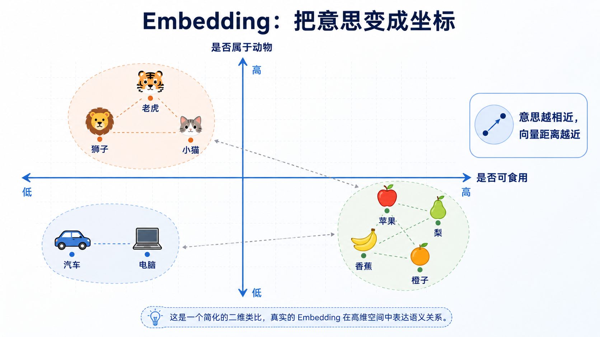
但实际的Embedding不是二维，而是几百维甚至一千多维。我们的大脑无法想象这么高的维度，但数学模型可以。有意思的是，这些高维向量之间有代数关系：教师 − 学校 + 医院 ≈ 医生、巴黎-法国+中国≈北京。向量竟然学到了类比的逻辑！
Embedding应用举例：
①语义搜索：可以用语义关系而不是关键词去搜索，比如搜"悲伤的爱情故事"会找到所有情感相似的作品。
②推荐系统：推荐与用户兴趣向量"最接近"的商品。
③分类：相同类别的文档向量会聚集在一起。
④聚类：自动发现文本之间的相似性。
理解了 Embedding，RAG 的流程就一目了然了。简单来讲，它其实就三步：
step1：把资料变成坐标点（导入与向量化）：提前把所有文档切分成小段（chunk），用Embedding把每一段都变成一个坐标点，存进一个知识库里。
step2：拿问题去就近找（检索召回）：当我们提问“差旅费怎么报？”，系统先把我们这句问题也 Embedding成一个坐标点，然后去知识库里找离它最近的那几个坐标点——这几段文字，就是和我们问题最相关的资料。
step3：把资料塞给模型再作答（增强生成）：把找到的这几段资料，连同我们的问题，一起塞进提示词喂给大模型，让它看着这些资料来回答。
这样一来，AI 的回答就有了准确、实时、可溯源的依据，“幻觉"问题被大大缓解。这就是为什么企业做 AI，第一步几乎都是搭知识库——本质就是在为 RAG 准备“坐标点”。
1.2.6 工具调用（Tool Use）：让 AI 能“动手做事”
有了Prompt、Memory和RAG，AI 已经会说、会记、会查了。但它依然只会“说”，不会“做”。 要突破这一点，就要让 AI 学会用工具。
举一个例子：模型本身并没有查询实时天气的能力（天气是随时变化的，训练时根本学不到今天的数据），但我们又希望它能帮我们查天气，怎么办？
答案是，让模型去调用一个现成的、已经封装好的天气查询工具。工具本质上可以看作一个函数（Function），使用工具就是去调用这些函数，这个动作也被称为“Function Call”。更重要的是，模型使用工具时，只需要知道“怎么用”，而不需要知道它“内部是怎么实现的”，就像我们用计算器，只管按键取结果，不必了解它内部的电路。
在上述例子中，我们可以把天气查询功能想象成一个数学函数T(X, Y) 。
T(X, Y) —— 其中 X 是地点，Y 是日期。当我们告诉模型“想查询上海今天的天气”，模型并不会自己瞎猜，而是先输出一段调用工具的指令，系统在后台执行这个工具（形如 T（上海，今天））、取回结果（例如“摄氏 32 度”），这段结果通常并不直接展示给用户，而是重新交还给模型，模型再据此接龙出一句自然、通顺的回答。可以看到，模型自己并不“懂”天气，它扮演的角色，是判断“该在什么时候、调用哪个工具、填什么参数”，再把工具返回的结果组织成自然语言回复我们。
工具远不止查天气这一种。大语言模型常用的工具包括执行代码的 Python、搜索引擎，乃至调用另一个更强的 AI——不同工具能力不同，也各有成本。除此之外，发送邮件、查询数据库、下单、在系统里生成一张工单，都可以被封装成工具供模型调用。只要把某项能力做成一个标准的“函数”交给它，它就能在合适的时机自行取用。
1.2.7 MCP：让工具调用有一门“普通话”
前面提到，工具本质上就是一个个可供模型调用的函数。当工具越来越多，一个新的麻烦便浮现出来：这些工具各说各的“方言”。例如，有的要求我们用英语来问，有的要求中文，有的又规定了另一套完全不同的参数格式；又或者这个工具把地点字段叫作 city，那个工具叫 location，还有的干脆叫“地点”。如果没有统一的规矩，就会陷入一种极其低效的局面，每一个工具，都要为全球成千上万家 AI 公司分别对接、各自维护一套不同的接口；反过来，每一家 AI 公司，也要为成千上万个工具逐一适配。这是一种“多对多”的重复劳动，无论对工具方还是模型方，都是一场灾难。
解决办法其实很朴素，和人类社会解决语言不通的思路如出一辙：大家坐下来，约定一套统一的、通用的协议。我们可以把它理解成一份公认的“说明书”或“标准接口规范”——所有 AI 公司都按照这一套标准格式去调用工具，所有工具方也只需按照这同一套标准来对外提供服务。这个用于工具调用的通用标准协议，就叫作 MCP（Model Context Protocol，模型上下文协议），由 Anthropic 公司在 2024 年前后提出，如今已被越来越多的厂商采纳，逐渐成为业界通行的做法。
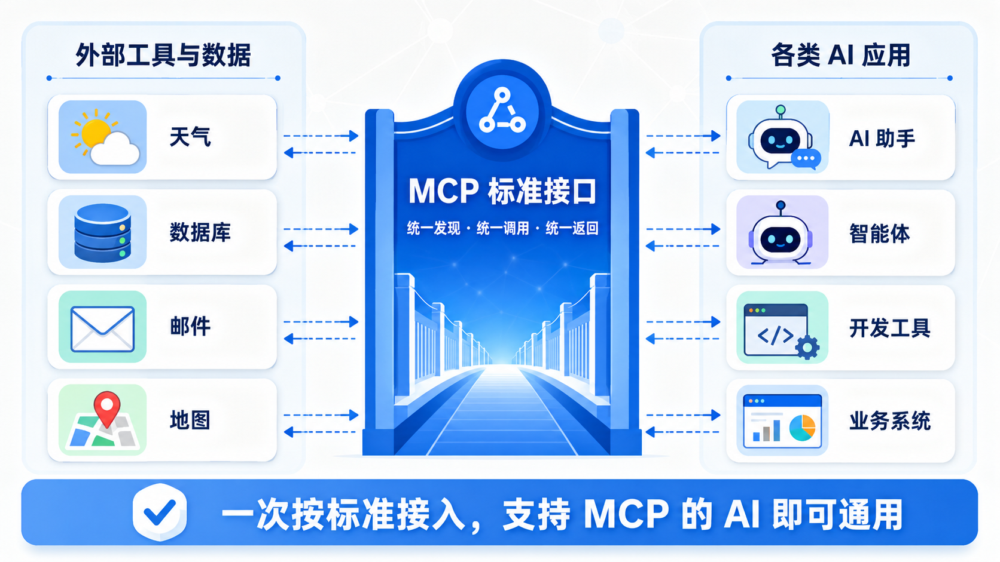
它带来的改变是显著的。以前，一个工具方要想让自己的能力被各家 AI 使用，往往得反复对接、重复开发；有了 MCP，它只需要按照这套标准，把自己的能力“挂”出来一次，任何支持 MCP 的 AI 就都能直接调用，无需再单独适配。就好比商家只要把菜单印成统一的标准格式，天下的顾客都能照着点单，不必每进一家店就重新学一套规则。
正是有了 MCP 这样的统一协议，AI 才能更方便、更规范地连接起各种各样的外部工具和数据，工具生态也随之迅速繁荣起来。
1.2.8 小结
本小节我们把让大语言模型变得更好用的重要基础能力大致了解了一遍：
- 会接龙的模型（LLM）
- 给它人设（Prompt）
- 让它记事（Memory）
- 让它查资料（Embedding + RAG）
- 让它动手（Tool Use）
- 统一动手的规矩（MCP）
事实上，大约在 2022 年之前，市面上的 AI 工具虽然已经很能干，但是复杂、需要分步执行的长任务它仍然做不了。要突破这个瓶颈，AI 须得从一问一答的工具，进化成能自己规划、分步骤把复杂任务做完的智能体。
下一节 1.3「智能体（Agent）基础」将继续解释这些能力如何被组织成 Goal–Action–Observation 循环，使 AI 能自主规划并完成多步骤任务。
1.3智能体（Agent）基础
2022 年前后，一方面，ChatGPT 通过 RLHF 和指令微调，让模型第一次能稳定地“听人话”、照指令干活；另一方面，思维链（CoT）的发现教会了模型“分步骤思考”，大幅提升复杂推理能力。两块拼图凑齐——“会听指令 + 会分步想”，2023 年初立刻涌现出 AutoGPT、BabyAGI 等一批 AI Agent 项目，智能体时代的大门就此打开。
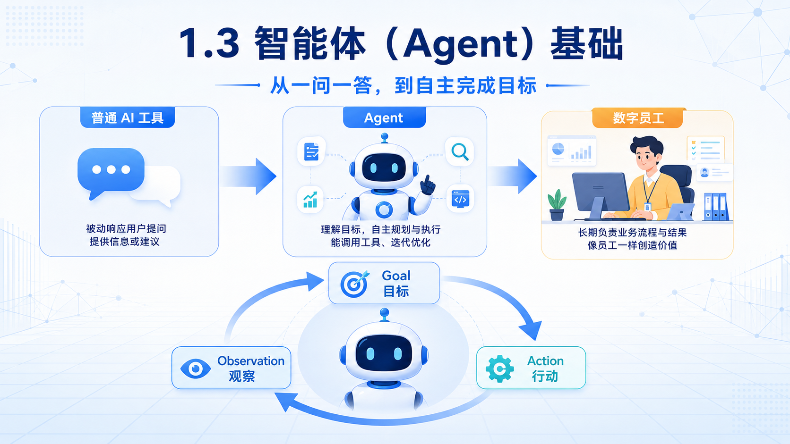
1.3.1 什么是智能体
智能体（Agent）是一种 AI 系统：人只需要给它一个目标，它就能自己拆解任务、规划步骤、调用工具去执行，并根据每一步结果不断调整，直到把目标完成。
过去我们熟悉的大语言模型，是一种一问一答的工具：我们问一句，它答一句；要它完成一件复杂的事，就得由我们把每一步都想清楚，再一条条指令喂给它。真正动脑筋去规划的，其实是我们，而不是 AI。
而智能体，把“规划”这件事也交给了 AI。我们不再需要告诉它“第一步做什么、第二步做什么”，只需要告诉它“我最终想要什么”，剩下的“该分几步、每一步做什么、做完之后怎么办”，都由它自己决定。普通的 AI 工具像一个“听指令的执行者”，你说一步它做一步；而智能体更像一个“能扛事的员工”，你交给它一个任务，它自己想办法把它办成。这也正是 AI 从“工具”进化为“数字员工”的原因所在。
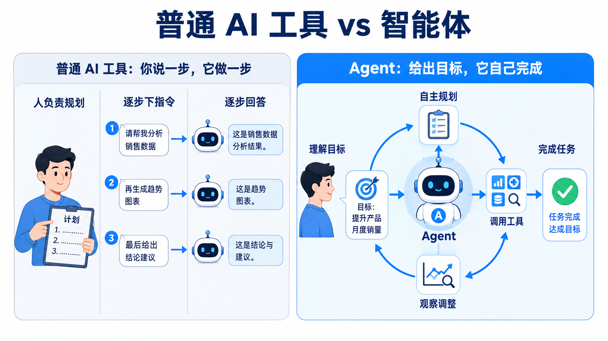
智能体如何运转：Goal–Action–Observation 循环
智能体最核心的运行方式，可以用三个词概括，它们构成一个不断循环的圈：
| 环节 | 含义 | 餐厅预订示例 |
|---|---|---|
| Goal（目标） | 人给它一个目标，而不是一步步的指令。 | “帮我订周五晚上和朋友聚餐的餐厅。” |
| Action（行动） | 为了达成目标，它自己决定下一步做什么。 | 上网搜索附近餐厅、对比评分、电话或系统订位。 |
| Observation（观察） | 它观察行动结果，并据此调整计划，进入下一轮行动。 | 餐厅 A 满座，于是改订餐厅 B。 |
三步不断循环——观察结果、决定下一步、再观察新的结果——直到目标最终达成。它和过去那种“一问一答”的工具有着本质区别：过去我们得手把手地把每一步指令都下清楚，少说一步它就卡在那里；而智能体只需要接住一个目标，剩下的拆解、尝试、遇阻后的调整，都由它自己完成。
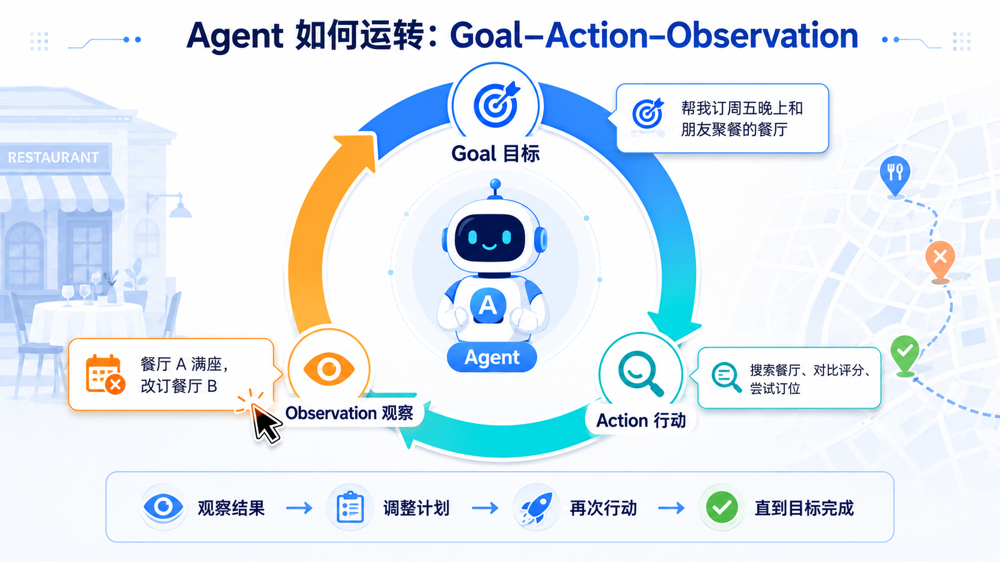
从大语言模型角度看：Agent 仍然是在“接龙”
从大语言模型的角度看，智能体要解决的问题，无非就是“目标（Goal）、观察（Observation）、行动（Action）”这几样东西交替出现，而语言模型在整个过程中，其实一直都在做接龙。AI 智能体依靠的，正是语言模型现有的能力，而非某种全新的、被重新训练出来的智慧。
换句话说，智能体的“聪明”，并不是凭空多出来的。我们所做的，只是把“目标是什么”“上一步做了什么”“观察到了什么结果”这些信息，统统作为文字，一次次喂给那个我们已经熟悉的大语言模型，让它据此接龙出“下一步应该做什么”。模型接出的这一步，被拿去真正执行，执行的结果又被重新整理成文字，再喂回给它，开始下一轮接龙。如此循环往复，一个看似会“自己规划、自己办事”的智能体，就运转起来了。
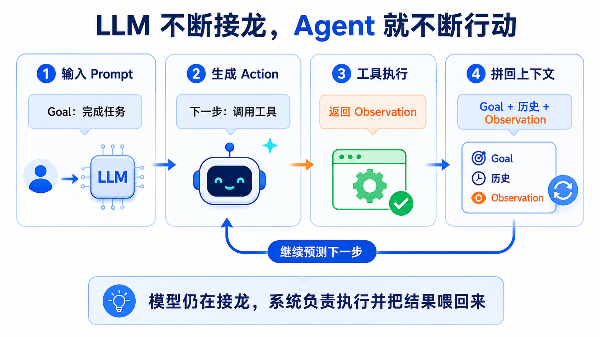
支撑这个循环顺畅运转的，是上一节讲过的关键机制：靠提示词（Prompt）为它设定目标与规则，靠记忆（Memory）让它记住之前发生了什么，靠工具调用（Tool Use）让它能真正“动手”执行并取回真实世界的观察结果，再靠 MCP 这样的统一协议让它方便地接入各种工具。
可以说，智能体并不是某种神秘的新物种，而是大语言模型现有的能力，加上 Prompt / Memory / Tool / MCP 这套机制，被组织起来、循环运转的结果。理解了这一点，前面铺垫的每一块拼图，也就在这里全部派上了用场。
1.3.2 Agent 编排方式
前面提到，智能体靠 Goal–Action–Observation 循环运转。但同样是这套循环，落地时可以有不同的编排方式：可以是一个 Agent 独自完成，也可以是多个 Agent 分工协作；可以让 AI 自主规划，也可以把流程提前固定成工作流；还可以让 AI 具备操作电脑、处理文件和调用命令的能力。
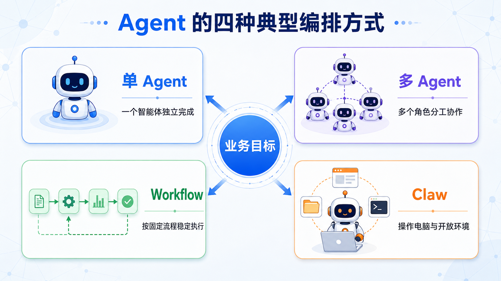
（1）单 Agent 与多 Agent：一个人干 vs 一个团队协作
单 Agent，就是一个 AI 智能体，独自面对目标：自己规划、自己调用工具、自己观察结果、自己完成整件事。从头到尾，都是它一个人在跑“目标—行动—观察”的循环。
它的优点是简单、直接，适合相对单一、不太复杂的任务。比如“帮我查一下明天上海到北京的高铁票，并整理成一张表”，这类目标清晰、步骤不多的任务，交给一个能力不错的单 Agent 就足够了。
但它的局限也很明显。当任务变得庞大而复杂，既要查资料、又要算数据、还要审核和撰写报告，让同一个 Agent 从头包到尾，就会像让一个人同时兼任所有工种一样，既容易顾此失彼，也难以保证每个环节的质量。
为了应对复杂任务，可以采用多智能体（Multi-Agent）的形式：把一个大任务交给一个“AI 团队”来协作完成。它会先把任务拆解成多个步骤，再把每一步分派给专门的子 Agent：一个负责查资料，一个负责算数据，一个负责风险把关，一个负责撰写结论。
多 Agent 的好处，是把“分工”和“专精”带进 AI 的世界：复杂任务被拆细后，每一环都能做得更专业；引入审核、复核角色，也让最终结果更少出错。当然，代价是调度更复杂，消耗的算力和成本也更高，所以并非任何任务都值得动用一整个团队。
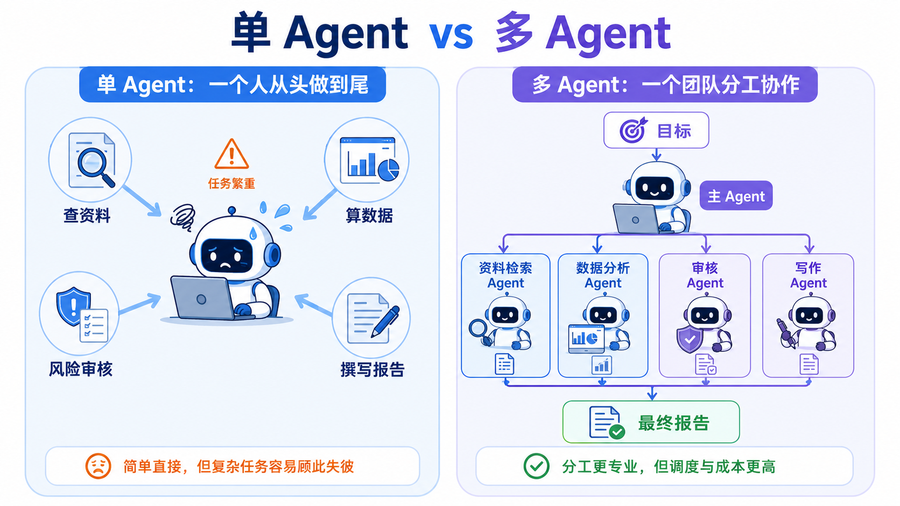
（2）工作流（Workflow）：把流程固化成流水线
在实际业务里，还有另一种截然不同、甚至思路正好相反的编排方式，叫作工作流（Workflow）。并不是所有任务都需要 AI “随机应变”。现实中有大量业务，其实每一次都按照几乎一模一样的步骤在走——先做什么、再做什么、遇到某种情况该走哪个分支，都是固定的、可以事先写清楚的。
对于这类业务，与其让 AI 每次都重新“动脑筋规划”（既慢，又可能跑偏），不如干脆把流程提前固定下来。工作流的做法，就像画一张流程图：把每一个环节做成一个个节点，再用连线把它们按顺序、按条件串接起来，编排成一条固定的流水线，然后让 AI 严格沿着这条线一步一步执行。
在这里，AI 不再是那个自由发挥的“规划者”，而更像流水线上一个训练有素、只做规定动作的“操作员”。遇到分支时，智能体会根据实际情况选择走工作流的哪条分支。
选择一个节点，查看它在流程中的输入、处理逻辑和输出。
判断问题类型
用户的自然语言问题和当前会话上下文。
识别咨询意图，判断问题属于数据查询、知识问答还是需要人工处理。
标准化的问题类型与后续执行分支。
调用接口查询数据
已识别的问题类型、查询条件和用户权限。
调用经过授权的业务接口，并记录调用参数、状态和返回结果。
结构化业务数据；失败时转入异常兜底。
根据查询结果生成建议
接口返回数据、回答规则与必要的业务知识。
由模型基于真实结果组织解释与建议，不补造缺失信息。
可供用户理解的自然语言草稿。
回复用户
生成的回答草稿、格式规范与安全检查结果。
应用输出格式并完成最后校验。
最终回复和必要的引用或提示。
异常兜底 / 转人工
接口失败、数据缺失、权限不足或低置信度结果。
停止继续自动执行，保存上下文并向用户说明原因。
明确的失败提示，或携带完整上下文转交人工。
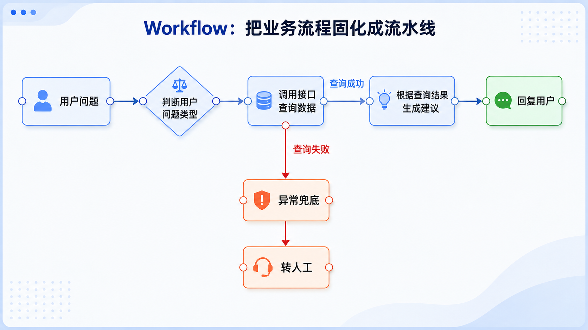
（3）Claw 模式：能操作电脑的 AI
2025 年初，一个新范式火了起来，业内常把这一类产品称为 Claw。很多人第一次听到，觉得它玄乎又神秘，但其实它的原理和前面讲的东西并没有本质区别——它只是在原有基础上，多做了一件事：让 AI 能够发出操作电脑的指令。
以前的 AI，无论多么强大，输出的本质上都只是文字——它能把一件事说得头头是道，却终究只是“说”，真正动手去做的还得是人。而 Claw 这类 AI，输出的可以是对电脑的操作指令：移动鼠标、点击、按下键盘、打开文档、填写表单、执行命令等。于是，AI 不再只是隔着屏幕跟人说话，而是能真正“动手”操作电脑，替人把事情从头做到尾。
看似神奇，但底层逻辑在工具调用中已经可以理解。电脑操作本质上也是一组工具：键盘输入、鼠标移动与点击、打开或关闭程序、执行命令。只要把这些操作封装成工具交给 AI 调用，就实现了“AI 操作电脑”。所以它本质上和 Tool Use、MCP 是一回事：按照约定好的方式，让 AI 发出标准化的指令。
Claw 范式还有一个很吸引人的创新：它可以和聊天工具连在一起。于是我们会获得一种“远程操控”的体验——就像用手机给电脑发了一条消息，电脑那头的 AI 就自己动起来，把活干完。从技术上看，这些指令本身并不复杂，但这种“我随手发个消息，电脑就自动帮我办事”的体验，一下子击中了大众。
tip1：Claw 还很新：安全、权限与复杂长任务问题必须心里有数
- 安全问题：它能真正操作电脑，一旦被滥用或理解错误，后果可能很严重。例如误执行删除文件、泄露数据或受网页中的恶意指令影响。
- 权限问题：既然它能接触文件和系统，“该让它碰哪些、不该碰哪些”的边界非常重要。
- 复杂长任务仍然吃力：Claw 的手脚虽然灵活，但“大脑”仍取决于背后的语言模型，面对特别长、步骤特别多的任务仍可能失控或跑偏。
下面用四个任务检验一下判断力：为每项任务选择最合适的执行策略。判断时要关注权限、可逆性和外部影响。
tip2：本地 Claw vs 云端 Claw
| 类型 | 说明 | 适合场景 |
|---|---|---|
| 本地 Claw | 直接在自己的电脑上运行，操作本机文件、浏览器和软件。优点是环境贴近个人工作流；缺点是消耗本机算力，且权限边界必须谨慎设置。 | 个人办公自动化、文件整理、本地数据处理、需要访问本机应用的任务。 |
| 云端 Claw | 把任务放到云端环境运行，跑完再把结果发回。优点是弹性部署、隔离性更好；缺点是云端算力成本较高，且需要处理数据上传与安全边界。 | 企业级批处理、弹性任务、需要隔离运行环境的自动化任务。 |
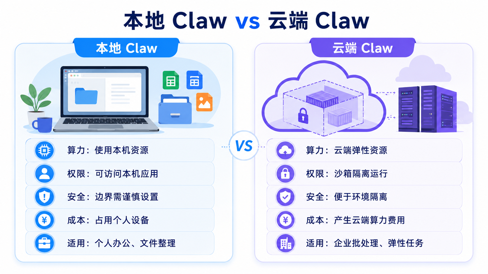
1.3.3 为什么企业造智能体，需要一个平台
学到这里，你可能会产生一种“我已经很懂 AI 了”的兴奋感。但事实上，个人日常使用 AI，和一家企业要把智能体真用起来、用得好、用得放心，是截然不同的。
一个人玩 AI，缺了什么问题不大。但一家企业要把智能体落地到真实业务里，例如智能客服、知识助手、经营分析、流程自动化，马上会撞上一堆现实的墙。
| 企业会遇到的问题 | 为什么单个 AI 工具不够 |
|---|---|
| 知识从哪来？ | RAG 需要把成百上千份文档、表格高质量地做成知识库，涉及文档解析、切分、向量检索、更新和权限管理。 |
| 工具怎么接？ | 企业要让 AI 调用内部系统、数据库、审批接口，也要接入外部 MCP 工具，需要连接器、鉴权和工具治理。 |
| 流程怎么搭？ | 严谨业务要用工作流，复杂任务要用多 Agent，需要可视化编排、变量流转、节点调试和异常兜底。 |
| 权限和安全怎么办？ | 不同部门、岗位能看的知识和能调用的接口不同，数据要隔离、审计、合规。 |
| 效果好不好、花了多少钱？ | 上线后需要评测效果、监控用量、分析对话、持续优化，否则就是一笔糊涂账。 |
（1）企业级 Agent 必须具备的六大特性
企业级 Agent 不是演示用的玩具，而是要进入真实业务系统。因此，它必须具备可控性、可测性、可审计性、可运维性、可复用性和可集成性。
| 特性 | 含义 | 业务示例 |
|---|---|---|
| 可控性 Controllability | 系统在任何时候都受人类掌控，而不是“野生运行”。能暂停、停止、设置权限边界、修改目标或约束、干预决策。 | Agent 发现要删除客户信息时，必须等待人工审批，而不是自动执行。 |
| 可测性 Testability | 能够验证 Agent 是否按预期工作，包括完整日志、可重现问题场景、清晰成功标准和测试环境。 | 上线前用测试集验证问答准确率、召回率、流程完成率。 |
| 可审计性 Auditability | 任何决策和行动都有完整审计痕迹，包括决策记录、信息来源、时间戳、操作者和异常标记。 | 系统可回溯某次拒答参考了哪个规则、何时执行、是否人工干预。 |
| 可运维性 Maintainability | 系统容易被监控、调试、升级和回滚，能快速定位模型、知识、规则或工具问题。 | 成功率从 95% 降到 70% 时，系统告警并帮助定位是哪类任务失败。 |
| 可复用性 Reusability | 能力模块、知识库、工具、规则和模板能被多个 Agent 或系统复用。 | 一个部门建设的政策知识库，可授权给多个问答助手复用。 |
| 可集成性 Integrability | 能和企业现有系统对接，具备标准 API、企业系统连接、数据输入输出能力。 | Agent 能接入 CRM、ERP、企业微信、工单系统或数据库。 |
点击卡片翻面，查看定义、业务示例及 ADP 中的对应能力。
（2）ADP：企业造智能体的一站式平台
换句话说，企业要“可控、可运营、能规模化”地落地智能体，就必须有一个把这些能力和特性全部整合好、开箱即用的一站式平台。这样的平台，不是一个通用聊天机器人，也不是某个单独的 Claw 工具，而是专门为“企业造智能体”而生的开发与运营底座。
腾讯云 ADP（智能体开发平台，Agent Development Platform）正是这样一个平台。它把本章讲到的大模型、知识库（RAG）、提示词、变量与记忆、连接器与工具（含 MCP）、工作流、多 Agent，乃至 Claw 模式，全部做成了可视化、可配置、可运营的产品能力，让不懂代码的业务人员，也能亲手把一个智能体造出来。
| 企业级特性 | ADP 中可对应表达的能力 |
|---|---|
| 可控性 | 权限边界、人工干预、发布审批、工具调用范围控制。 |
| 可测性 | 调试工具、评测数据集、对话日志、节点运行记录。 |
| 可审计性 | 知识引用来源、操作留痕、接口调用记录、决策过程回溯。 |
| 可运维性 | 用量监控、效果分析、版本管理、异常定位与回滚。 |
| 可复用性 | 知识库共享、工具复用、Prompt / Workflow / 模板沉淀。 |
| 可集成性 | API、数据库、MCP、企业微信、CRM、ERP、工单系统等企业系统接入。 |
正是这些特性，让企业能够真正“安心”地把智能体用在生产环境里——不是做一个演示用的玩具，而是搭建一套可控、可运营、能长期迭代的业务系统。它的优势在哪、能提供哪些具体能力？这正是下一章“ADP 产品能力”要展开的内容。
1.3 小结
- 智能体不是神秘的新物种，而是大语言模型加上 Prompt、Memory、Tool Use、MCP 等机制后形成的能自己规划、自己行动，从而完成多步骤的复杂任务目标的人工智能系统。
- Agent 的核心运行逻辑是 Goal–Action–Observation 循环：给目标、做行动、看结果、再调整。
- Agent 可以有多种编排方式：单 Agent 适合简单任务，多 Agent 适合复杂协作，Workflow 适合固定流程，Claw 适合开放探索和电脑操作任务。
- 企业落地 Agent 不能只靠一个聊天工具，还需要知识、工具、流程、权限、安全、评测和运营的一站式平台支撑。ADP 正是把这些能力产品化、可视化、可运营化的智能体开发平台。
下一节进入第 2 章“ADP 产品能力”。在理解 Agent 的基本概念后，接下来会看到 ADP 如何把应用、知识库、Workflow、工具、模型、发布和运营能力组织成一套企业级智能体开发平台。